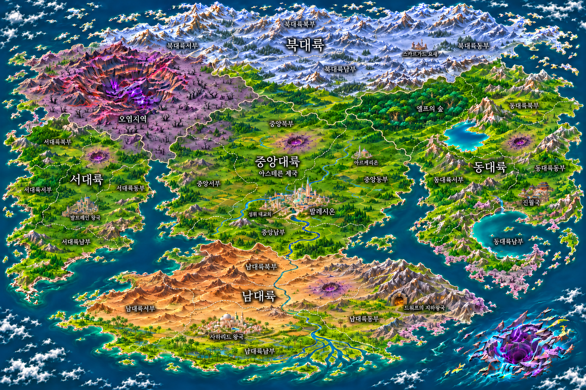

세계관 지도와 설정집
대륙이나 지도 번호를 누르면 국가·수도·마탑·가문·신앙·부족 설정을 볼 수 있습니다.

아르케리온은 독립 세력인 마탑이 자리한 작은 마법 수도입니다. 지도와 설정집에서 같은 지명과 세력 관계를 사용합니다.
대륙이나 지도 번호를 누르면 국가·수도·마탑·가문·신앙·부족 설정을 볼 수 있습니다.

아르케리온은 독립 세력인 마탑이 자리한 작은 마법 수도입니다. 지도와 설정집에서 같은 지명과 세력 관계를 사용합니다.